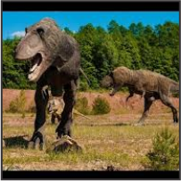
A Look At Prehistoric Mammals
Evolutionary divergence of synapsids and early mammals alongside Mesozoic reptiles.
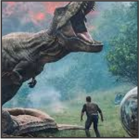
A Look INSIDE Dinosaurs
CT scans, pneumatic bone air sacs, and internal respiratory anatomy of theropods.
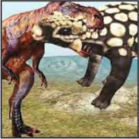
Baby Dinosaur's First Flight!
Wing feather developments in arboreal microraptorines and early bird ancestors.
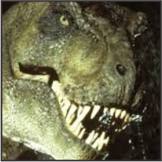
Big HORNED Dinosaurs
Biomechanical testing of Triceratops and Torosaurus frill and horn impact strength.
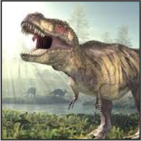
Biggest T-Rex BATTLES!
Bite force analysis measuring over 35,000 Newtons of bone-crushing power.
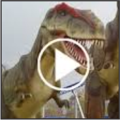
Completed Dinosaur Fossils Revealed
From rock matrix extraction to full laboratory mount in world museums.
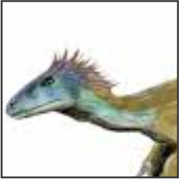
Crazy Dinosaur Mating Rituals
Feather courtship displays, resonance vocalizations, and ceremonial crests.
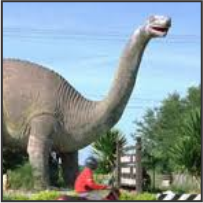
Nesting Habits of Baby Dinosaurs
Fossilized egg clutches, embryonic preservation, and parental brooding behavior.
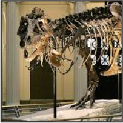
Attack of the Nighttime Dinosaur!
Scleral ring fossils revealing large eye sockets suited for low-light night ambushes.
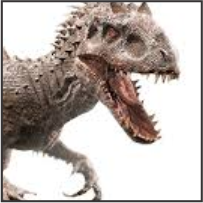
Prehistoric Ecosystems Reconstructed
Dense Mesozoic floodplains, climate simulations, and ancient flora dynamics.
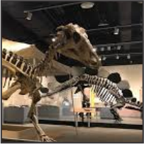
Dinosaur Babies In Danger!
Predation pressures on juvenile hadrosaurs and sauropod hatchlings.
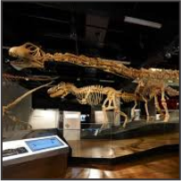
Diet & Toxic Flora Interactions
Gastroliths, gut fermentation, and coping with ancient cycad poisons.
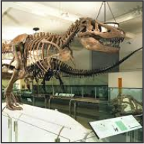
Pioneers of Paleontology
The historic fossil hunts of Mary Anning, Gideon Mantell, and Barnum Brown.
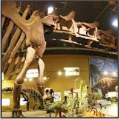
Dinosaur Hordes On The Move
Trackway bonebeds proving massive seasonal migrations across ancient continents.
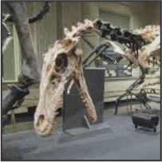
Epic Mesozoic Turf Battles
North African river systems where rival mega-carnivores competed for riverbank prey.
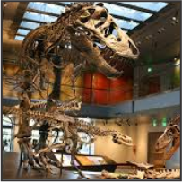
How Dinosaurs Went Extinct!
Chicxulub impact physics, Deccan Traps volcanism, and the atmospheric winter.
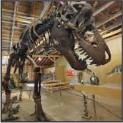
Feathered Dinosaurs: Bird Ancestors!
Liaoning fossil discoveries revealing plumages, melanosomes, and vibrant colors.
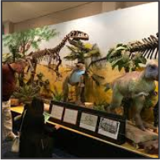
MEGA-HUGE: The Biggest Dinosaurs Ever!
Biophysics of 70-ton Argentinosaurus and Patagotitan weight distribution.
Expand Your Prehistoric Knowledge
Explore our companion photo galleries, interactive evolutionary history timelines, and field research downloads.